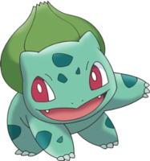
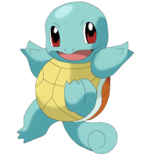

Kanto é uma região no universo Pokémon e foi a primeira a ser apresentado na franquia. É modelada e nomeada após a região de Kanto, uma região no Japão, que inclui, entre outras cidades, a capital japonesa Tóquio, e, como todas as outras regiões não foram nomeadas após algum lugar, Kanto é a única que compartilha seu nome com uma localização do mundo real. Foi a primeira região lançada. A semelhança entre as formações baía vistos no mapa do jogo eo real Sagami Bay, Suruga Bay, e Tokyo Bay formações é particularmente impressionante.
Kanto encontra-se ao leste de Johto; as duas regiões presumivelmente tornam-se um pequeno continente. O Sul de Kanto são as Ilhas Sevii e as Ilhas Laranja. Hoenn, introduzida em Pokémon Ruby e Sapphire, é supostamente mais para o sudoeste. Supostamente, para o norte do continente é a região de Sinnoh. Unova tem uma distância considerável, e não se sabe a distância de Kalos em relação a Kanto. As Rotas localizadas dentro de Kanto são numeradas de 1 a 25; as rotas 26, 27 e 28 conectam Kanto com Johto.
Escolha um pokémon inicial:
 